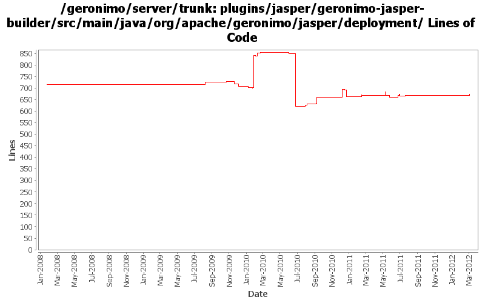

[root]/plugins/jasper/geronimo-jasper-builder/src/main/java/org/apache/geronimo/jasper/deployment

| Author | Changes | Lines of Code | Lines per Change |
|---|---|---|---|
| Totals | 44 (100.0%) | 755 (100.0%) | 17.1 |
| gawor | 12 (27.3%) | 330 (43.7%) | 27.5 |
| xuhaihong | 11 (25.0%) | 198 (26.2%) | 18.0 |
| djencks | 16 (36.4%) | 186 (24.6%) | 11.6 |
| rickmcguire | 1 (2.3%) | 20 (2.6%) | 20.0 |
| violalu | 2 (4.5%) | 17 (2.3%) | 8.5 |
| jdillon | 1 (2.3%) | 3 (0.4%) | 3.0 |
| rwonly | 1 (2.3%) | 1 (0.1%) | 1.0 |
GERONIMO-6292 Share the japser servlet between jasper plugin and web-container plugin.
6 lines of code changed in 1 file:
Recover the original classfinder while tags building is finished
4 lines of code changed in 1 file:
GERONIMO-6025 make the url-pattern validation happen in a single place
1 lines of code changed in 1 file:
GERONIMO-6025 missed a use of url patterns
5 lines of code changed in 1 file:
GERONIMO-5942 Use the correct bundle to load the tag class
29 lines of code changed in 1 file:
GERONIMO-5976: Load JSP tag libraries from bundles
8 lines of code changed in 1 file:
GERONIMO-5949 Move session-config and login-config from JspModuleBuilderExtension.java to AbstractWebModuleBuilder.java
1 lines of code changed in 1 file:
GERONIMO-5949 The containers must inform the developer with a
descriptive error message when the deployment descriptor contains more than
one element of session-config, and login-config.
16 lines of code changed in 1 file:
GERONIMO-5778 Exclude jars from annotation scanning and/or bundle classpath
9 lines of code changed in 2 files:
GERONIMO-5810 Limit tld scanning scope in BundleTldScanner
21 lines of code changed in 2 files:
XBEAN-162 update to genericed xbean-finder apis
1 lines of code changed in 1 file:
GERONIMO-5726 Still use JAXB for TLD parsing
36 lines of code changed in 1 file:
Remove system.out debug line
0 lines of code changed in 1 file:
GERONIMO-5726 There is no need for jasper builder to parse the whole tld files, it only needs the tag classes and listener classes for naming builder. Turn to use xmlbeans to find the interested elements. But currently, we have no way to do the tld validation.
84 lines of code changed in 1 file:
GERONIMO-5567 fix some more integration issues with Registration based web.xml processing. Functional but needs cleanup.
29 lines of code changed in 1 file:
GERONIMO-5567 rewrite jetty integration to use a openejb-like info tree and the *Registration interfaces. This gets everything started in the right order and is a lot simpler. Old code still needs to be removed
22 lines of code changed in 1 file:
GERONIMO-5066 Fix a lot of problems with jndi including wrong finders and inconsistent adding of injections
13 lines of code changed in 1 file:
GERONIMO-5487 provide the ability to manually exclude listeners
14 lines of code changed in 1 file:
GERONIMO-5190 use openejb-jee jaxb tree for spec dds
32 lines of code changed in 1 file:
GERONIMO-5025, GERONIMO-5117. Make jndi supported directly by Modules and straighten out which contexts are shared when.
0 lines of code changed in 1 file:
XBEAN-148 use new xbean-bundleutils
1 lines of code changed in 1 file:
GERONIMO-5150 type safe shared data in EARContext
1 lines of code changed in 1 file:
disable global tld scanning at deploy time for now
2 lines of code changed in 1 file:
if we can't load listener class don't add it to the list
2 lines of code changed in 1 file:
GERONIMO-5051, GERONIMO-4996: Use the updated Jasper API to discover TLDs for JSTL and Myfaces
28 lines of code changed in 1 file:
GERONIMO-5057 Use those xmlbeans generated by JAVA EE 6 schema files
9 lines of code changed in 1 file:
GERONIMO-5051: Pass listeners discovered in tlds during deployment to Tomcat. Tomcat won't have to scan for TLDs at startup and it is closer to what we do for Jetty
1 lines of code changed in 1 file:
GERONIMO-5051: Fix tld discovery at deployment and runtime
285 lines of code changed in 3 files:
GERONIMO-5030: Initial refactoring of some of the module deployment code to support deployment of Bundles. Also, implemented rfc66 extender that can actually deploy WABs with simple servlets and jsps.
3 lines of code changed in 1 file:
add DelegatingBundle that can delegate calls to multiple Bundles and remove classSource support
1 lines of code changed in 1 file:
GERONIMO-5021 allow gbean classes to be loaded from another plugin, plus use in jetty and jasper
36 lines of code changed in 1 file:
GERONIMO-4965. Get base console to compile. Simplify how locations in car are computed slightly, this needs to be ported to openejb and probably myfaces module bundlers
14 lines of code changed in 1 file:
fix problem in EarConfigBuilder when constructing sub-configurations for wars. Rename DeploymentContext.getBundle to getDependencyBundle to try to make it clearer that it is temporary and not always available. Start updating pluto/console stuff for pluto 2.
2 lines of code changed in 1 file:
use pax-logging 1.4.1-SNAPSHOT, clean up a few other build bits. All the activated plugins build for me now, with the smx jdt import patch
6 lines of code changed in 1 file:
some jasper cleanup work
20 lines of code changed in 1 file:
GERONIMO-4788 don't require a jasper dependency on web apps in jetty
9 lines of code changed in 1 file:
GERONIMO-4258 clean up some naming constant usage
1 lines of code changed in 1 file:
(GERONIMO-3985) Use SLF4J as the primary logging facade for Geronimo
3 lines of code changed in 1 file:
sometimes some elements were skipped during dtd->xsd translation causing validation errors (GERONIMO-3782)
0 lines of code changed in 2 files: